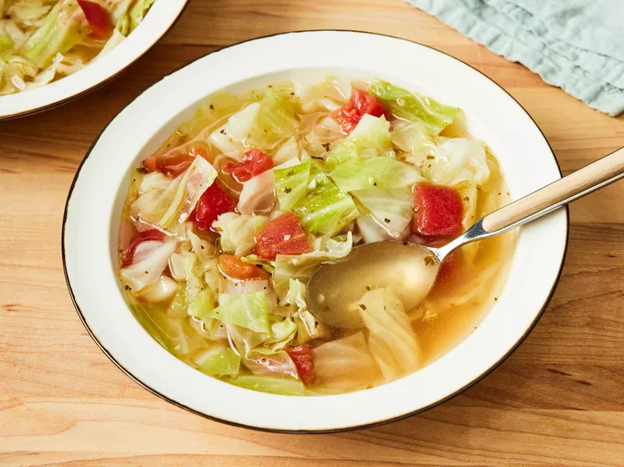

>
Healing Cabbage Soup Recipe
Healing Cabbage Soup

Description
While it's true a perfectly made, expertly fried, and quickly served samosa is superior to this version, that can be a very rare combination of events. By comparison, this quesadilla approach is almost impossible to mess up, and if you use enough oil in your pan, you should be able to achieve a beautifully browned, crispy crust that rivals something out of a deep fryer.
Ingredients
- 3 tablespoons olive oil
- 2 cloves garlic, chopped
- 4 teaspoons chicken bouillon granules
- 1 teaspoon salt, or to taste
- ½ teaspoon black pepper, or to taste
- ½ head cabbage, cored and coarsely chopped
- 1 (14.5 ounce) can Italian-style stewed tomatoes, drained and diced
Steps
-
In a large stockpot, heat olive oil over medium heat. Stir in onion and garlic; cook until onion is transparent, about 5 minutes.
-
Stir in water, bouillon, salt, and pepper. Bring to a boil, then stir in cabbage. Simmer until cabbage wilts, about 10 minutes.
-
Stir in tomatoes. Return to a boil, then simmer 15 to 30 minutes, stirring often.
-
Serve hot and enjoy!
Home